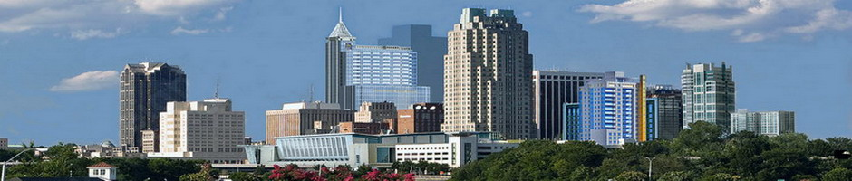
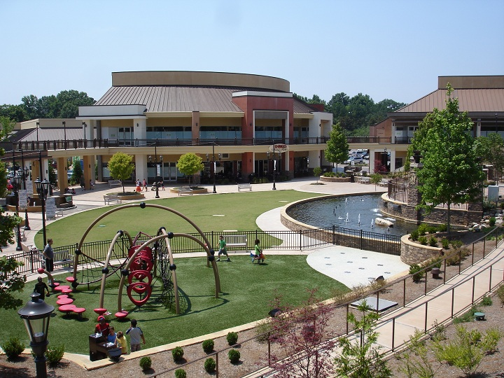

Town of Cary
North Carolina
At the Town of Cary we focus every day on enriching the lives of our citizens by creating an exceptional environment and providing exemplary services that enable our community to thrive and prosper.

About Cary
Cary is a thriving community in the heart of the Triangle area of North Carolina, between Raleigh and renowned Research Triangle Park. The Triangle area is repeatedly ranked among the top regions in the country to live or work, to find a home or start a business, to raise a family or retire.
Money Magazine named Cary, North Carolina, the hottest town in the East and one of six Hottest Towns in America. Cary was also recognized by Money Magazine as one of the Best Small Cities in America, ranking an impressive fifth on one of the magazine's annual lists of Best Places to Live. As noted in several major publications, Cary's accolades are numerous.
Cary embraces the best of city life
On the whole, Caryites are a hard-working group with one of the highest median household incomes in the state. And being no further than 20 minutes from major universities such as Duke, North Carolina State, and the University of North Carolina, it's no wonder that education is an important part of Cary life. More than two-thirds of adults hold a college degree. About 97 percent of citizens have access to the Internet in this, the Technology Town of North Carolina.
Our sense of security – Cary continually ranks as one of the top 20 safest large cities nationally and the safest in the Southeast. Its Police and Fire departments and Emergency Medical Services are nationally accredited.
Livability – Tree-lined streets and well-groomed subdivisions and office parks show Cary has grown the right way.
Vibrancy – Cary is home to world class businesses and national retail stores. Our fast-growing Parks, Recreation and Cultural Resources program has something for everyone, regardless of age or interest.
Diversity – School-age children comprise nearly a quarter of Cary's population. Yet people of retirement age are the fastest-growing group in Cary. Nineteen percent of townspeople were born in another country, and the Asian population - Cary's largest minority - tripled during the 1990s.
A progressive approach to challenge – Cary is proactive. We're conserving drinking water by reclaiming treated wastewater for irrigation and industrial processes; we're preserving open space; we're integrating sustainability into all that we do; and working with citizens and county leaders to make our schools even better.
Yet we've remained the Town of Cary while growing to more than 155,000 people.
At the Town of Cary, we focus every day on enriching the lives of our citizens by creating an exceptional environment and providing exemplary services that enable our community to thrive and prosper. The mayor's annual State of the Town address keeps citizens informed on how we're doing.